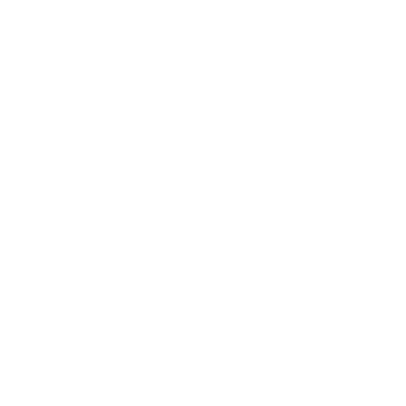

ইসলামিক অ্যাপস
ওজু শিক্ষা
পবিত্রতা ঈমানের অর্ধেক
ওজুর নিয়ত
نَوَيْتُ أَنْ أَتَوَضَّأَ لِرَفْعِ الْحَدَثِ وَاسْتِبَاحَةِ الصَّلَاةِ
আমি নামাজের জন্য পবিত্রতা অর্জনের উদ্দেশ্যে ওজু করার নিয়ত করলাম।
ওজুর ধাপসমূহ
১
বিসমিল্লাহ বলা ও নিয়ত করা
بِسْمِ اللَّهِ
ওজু শুরুতে বিসমিল্লাহ বলুন এবং আল্লাহর সন্তুষ্টির জন্য মনে নিয়ত করুন।
২
উভয় হাত কব্জি পর্যন্ত ধোয়া
তিনবার প্রতিটি হাত কব্জি পর্যন্ত ভালোভাবে ধুয়ে নিন।
৩
কুলি করা ও নাকে পানি দেওয়া
তিনবার মুখে পানি নিয়ে কুলি করুন এবং নাকে পানি দিয়ে ঝাড়া দিন।
৪
মুখমণ্ডল ধোয়া
তিনবার পুরো চেহারা — কপাল থেকে থুতনি, এক কান থেকে অন্য কান পর্যন্ত ধুয়ে নিন।
৫
উভয় হাত কনুই পর্যন্ত ধোয়া
ডান হাত কনুই সহ তিনবার ধুয়ে তারপর বাম হাত একইভাবে ধুয়ে নিন।
৬
মাথা মাসেহ করা
ভেজা হাত দিয়ে মাথার এক-চতুর্থাংশ একবার মাসেহ করুন।
৭
কান মাসেহ করা
মাথা মাসেহের পর একই পানি দিয়ে উভয় কানের ভেতর ও বাইরে মাসেহ করুন।
৮
উভয় পা গোড়ালি সহ ধোয়া
ডান পা গোড়ালি সহ তিনবার ধুয়ে তারপর বাম পা একইভাবে ধুয়ে নিন।
যে কারণে ওজু ভেঙে যায়
প্রস্রাব, পায়খানা বা বায়ু নির্গত হলে
গভীর ঘুম বা অজ্ঞান হয়ে পড়লে
মদ বা নেশাজাতীয় দ্রব্য পান করলে
পাগল বা মস্তিষ্কবিকৃত হলে
স্ত্রী-পুরুষের মধ্যে সহবাস হলে

সেটিংস
×
থিম
মিল্কি
নাইট
অন্যান্য সেবা
×
হাদিস শরীফ
তাসবিহ